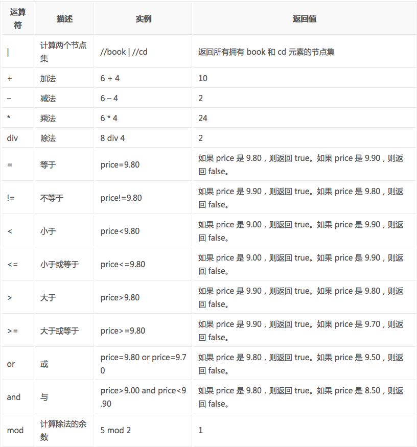

关于Python爬虫，我们需要学习的有：
1. Python基础语法学习（基础知识）
2. HTML页面的内容抓取（数据抓取）
3. HTML页面的数据提取（数据清洗）
4. Scrapy框架以及scrapy-redis分布式策略（第三方框架）
6. 爬虫(Spider)、反爬虫(Anti-Spider)、反反爬虫(Anti-Anti-Spider)之间的斗争….
为了重拾爬虫部分，决定写博客复习一下，废话不多说，这篇文章主要说一下 XPath与lxml类库
什么是XPath？
XPath (XML Path Language) 是一门在 XML 文档中查找信息的语言，可用来在 XML 文档中对元素和属性进行遍历。
W3School官方文档：http://www.w3school.com.cn/xpath/index.asp
XPath 开发工具
- 开源的XPath表达式编辑工具:XMLQuire(XML格式文件可用)
- Chrome插件XPath Helper
- Firefox插件 XPath Checker
选取节点
XPath 使用路径表达式来选取 XML 文档中的节点或者节点集。这些路径表达式和我们在常规的电脑文件系统中看到的表达式非常相似。
下面列出了最常用的路径表达式：
| 表达式 | 描述 |
|---|---|
| nodename | 选取此节点的所有子节点。 |
| / | 从根节点选取。 |
| // | 从匹配选择的当前节点选择文档中的节点，而不考虑它们的位置。 |
| . | 选取当前节点。 |
| .. | 选取当前节点的父节点。 |
| @ | 选取属性。 |
在下面的表格中，我们已列出了一些路径表达式以及表达式的结果：
| 路径表达式 | |
|---|---|
| bookstore | 选取 bookstore 元素的所有子节点。 |
| /bookstore | 选取根元素 bookstore。注释：假如路径起始于正斜杠( / )，则此路径始终代表到某元素的绝对路径！ |
| bookstore/book | 选取属于 bookstore 的子元素的所有 book 元素。 |
| //book | 选取所有 book 子元素，而不管它们在文档中的位置。 |
| bookstore//book | 选择属于 bookstore 元素的后代的所有 book 元素，而不管它们位于 bookstore 之下的什么位置。 |
| //@lang | 选取名为 lang 的所有属性。 |
谓语（Predicates）
谓语用来查找某个特定的节点或者包含某个指定的值的节点，被嵌在方括号中。
在下面的表格中，我们列出了带有谓语的一些路径表达式，以及表达式的结果：
| 路径表达式 | 结果 |
|---|---|
| /bookstore/book[1] | 选取属于 bookstore 子元素的第一个 book 元素。 |
| /bookstore/book[last()] | 选取属于 bookstore 子元素的最后一个 book 元素。 |
| /bookstore/book[last()-1] | 选取属于 bookstore 子元素的倒数第二个 book 元素。 |
| /bookstore/book[position()<3] | 选取最前面的两个属于 bookstore 元素的子元素的 book 元素。 |
| //title[@lang] | 选取所有拥有名为 lang 的属性的 title 元素。 |
| //title[@lang=’eng’] | 选取所有 title 元素，且这些元素拥有值为 eng 的 lang 属性。 |
| /bookstore/book[price>35.00] | 选取 bookstore 元素的所有 book 元素，且其中的 price 元素的值须大于 35.00。 |
| /bookstore/book[price>35.00]/title | 选取 bookstore 元素中的 book 元素的所有 title 元素，且其中的 price 元素的值须大于 35.00。 |
选取未知节点
XPath 通配符可用来选取未知的 XML 元素。
| 通配符 | 描述 |
|---|---|
| * | 匹配任何元素节点。 |
| @* | 匹配任何属性节点。 |
| node() | 匹配任何类型的节点。 |
在下面的表格中，我们列出了一些路径表达式，以及这些表达式的结果：
| 路径表达式 | 结果 |
|---|---|
| /bookstore/* | 选取 bookstore 元素的所有子元素。 |
| //* | 选取文档中的所有元素。 |
| //title[@*] | 选取所有带有属性的 title 元素。 |
选取若干路径
通过在路径表达式中使用“|”运算符，您可以选取若干个路径。
实例
在下面的表格中，我们列出了一些路径表达式，以及这些表达式的结果：
| 路径表达式 | 结果 | |
|---|---|---|
| //book/title \ | //book/price | 选取 book 元素的所有 title 和 price 元素。 |
| //title \ | //price | 选取文档中的所有 title 和 price 元素。 |
| /bookstore/book/title \ | //price | 选取属于 bookstore 元素的 book 元素的所有 title 元素，以及文档中所有的 price 元素。 |
XPath的运算符
下面列出了可用在 XPath 表达式中的运算符：

这些就是XPath的语法内容，在运用到Python抓取时要先转换为xml。
lxml库
lxml 是 一个HTML/XML的解析器，主要的功能是如何解析和提取 HTML/XML 数据。
lxml和正则一样，也是用 C 实现的，是一款高性能的 Python HTML/XML 解析器，我们可以利用之前学习的XPath语法，来快速的定位特定元素以及节点信息。
lxml python 官方文档：http://lxml.de/index.html
需要安装C语言库，可使用 pip 安装：
pip install lxml（或通过wheel方式安装）
初步使用
我们利用它来解析 HTML 代码，简单示例：
1 | # 使用 lxml 的 etree 库 |
输出结果：
1 | <html><body> |
lxml 可以自动修正 html 代码，例子里不仅补全了 li 标签，还添加了 body，html 标签。
文件读取：
除了直接读取字符串，lxml还支持从文件里读取内容。我们新建一个hello.html文件：
1 | <!-- hello.html --> |
再利用 etree.parse() 方法来读取文件。
1 | from lxml import etree |
输出结果与之前相同：
1 | <html><body> |
XPath实例测试
1. 获取所有的 <li> 标签
1 | from lxml import etree |
输出结果：
1 | <class 'lxml.etree._ElementTree'> |
2. 继续获取<li> 标签的所有 class属性
1 | from lxml import etree |
运行结果
1 | ['item-0', 'item-1', 'item-inactive', 'item-1', 'item-0'] |
3. 继续获取<li>标签下hre 为 link1.html 的 <a> 标签
1 | from lxml import etree |
运行结果
1 | [<Element a at 0x8dc9b8>] |
4. 获取<li> 标签下的所有 <span> 标签
1 | from lxml import etree |
运行结果
1 | [<Element span at 0x363c9e0>] |
5. 获取 <li> 标签下的<a>标签里的所有 class
1 | from lxml import etree |
运行结果
1 | ['blod'] |
6. 获取最后一个 <li> 的 <a> 的 href
1 | from lxml import etree |
运行结果
1 | ['link5.html'] |
7. 获取倒数第二个元素的内容
1 | from lxml import etree |
运行结果
1 | fourth item |
8. 获取 class 值为 bold 的标签名
1 | from lxml import etree |
运行结果
1 | span |
案例
现在我们用XPath来做一个简单的爬虫，我们尝试爬取某个贴吧里的所有帖子，并且将该这个帖子里每个楼层发布的图片下载到本地 。
1 | import urllib |